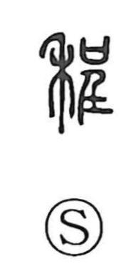

程

Uncategorized
Kun: hodo | On: tei
extent ・ degree ・ measure ・ distance
Explanation
程 is a phono-semantic compound with 禾, the grain plant, as its semantic core and 呈 (tei) as its phonetic. In Shirakawa’s reading, 呈 depicts hands lifting the sai—a covenant vessel that held written prayers—up to the gods. Joined with the grain element, the character evokes offering grain in prayer for a good harvest. From the measuring and apportioning of grain for such offerings, the sense broadened to measurement and gradation: fixed amounts, degrees, and regulated standards, then further to prescribed courses or stages such as itineraries and daily schedules. Ancient lexica already record it as a small unit of length, underscoring its fundamental idea of an established measure.